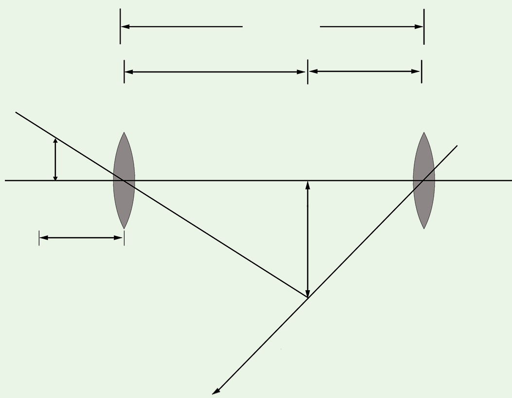

objective lens and the angular magnification of the eyepiece. That is;
To produce large magnification, and must be very small compared to . Therefore,
Hence,
Note that; , and are measured in centimetres (cm). This expression is used to determine the magnification produced by a compound microscope.
Task 6.3

Observe the image formed by a compound microscope, then state the nature of the formed image.
Example 6.2
A compound microscope consists of the objective lens and the eyepiece lens of focal length 12 cm and 4 cm, respectively. The two lenses are separated by a distance of 30 cm. The microscope is focused so that the image is formed at infinity. Determine the position of the object.
Solution
The final image is at infinity and two lenses are separated by the distance of 30 cm as shown in Figure 6.5.

From
Using lens formula,
Therefore, the object distance is 22.3 cm from the objective lens.